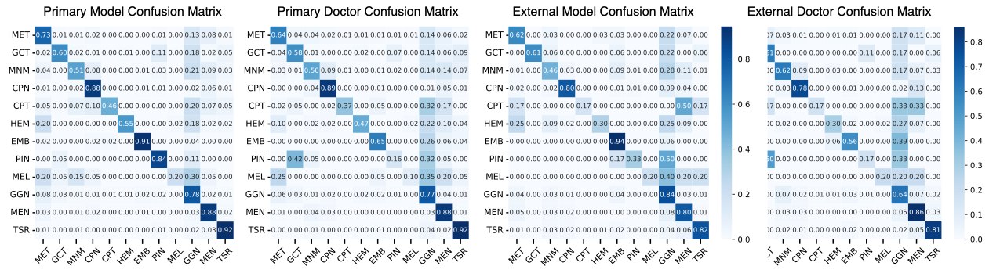
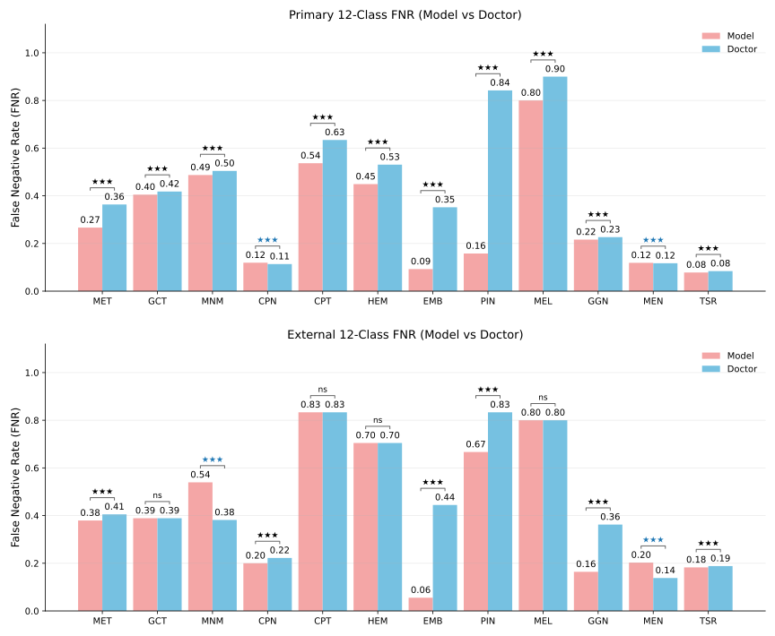

Coverage
Major classes and most subtypes
The model targets all 12 major categories and most subtypes, including less prevalent and imaging-ambiguous entities that are rarely covered by existing AI studies.
BrainVLM is evaluated across 12 WHO CNS5 tumor categories in primary and independent external cohorts.
Instead of restricting evaluation to a few common tumors, BrainVLM is trained and tested across the major diagnostic groups defined by WHO CNS5.
The model targets all 12 major categories and most subtypes, including less prevalent and imaging-ambiguous entities that are rarely covered by existing AI studies.
T1, T1c, T2, and T2-FLAIR are interpreted together with age and sex at the study level, without requiring advanced MRI sequences.
The retrospective benchmark contains 5,211 pathologically confirmed tumors, supporting direct evaluation of preoperative classification against the definitive diagnosis.
BrainVLM covers the 12 major WHO CNS5 brain tumor categories and extends toward less prevalent and imaging-ambiguous entities that are underrepresented in existing AI studies.

Performance was first measured in 3,877 held-out patients from the primary hospital and then tested in 1,334 patients from 11 independent hospitals. Postoperative pathology served as the reference standard.



BrainVLM reached precision 0.84, sensitivity 0.82, and Cohen’s κ 0.75, compared with 0.71, 0.80, and 0.69 for neuroradiologists.
External F1 remained 0.75, exceeding neuroradiologist consensus at 0.71 and comparator AI models, whose F1 scores ranged from 0.30 to 0.52.
In the primary cohort, F1 was higher than neuroradiologists for hematolymphoid (0.64 vs 0.45), embryonal (0.68 vs 0.58), and choroid plexus tumors (0.55 vs 0.47).
The category-level analysis provides more context than a single aggregate score and helps identify both clinically useful strengths and remaining boundaries.
For meningioma, the glioma/glioneuronal/neuronal group, and cranial or paraspinal nerve tumors, BrainVLM matched or exceeded expert-level F1 in the primary cohort.
More than 90% of the two most frequent misclassification pairs overlapped between BrainVLM and human experts in both retrospective cohorts.
BrainVLM used standard T1, T1c, T2, and T2-FLAIR plus demographics, while neuroradiologists consulted additional advanced imaging in 56.1% of cases.
Beyond the 12-category task, BrainVLM was fine-tuned to distinguish IDH-mutant astrocytoma, IDH-mutant oligodendroglioma, and IDH-wildtype glioblastoma—three clinically important adult-type diffuse glioma subgroups.